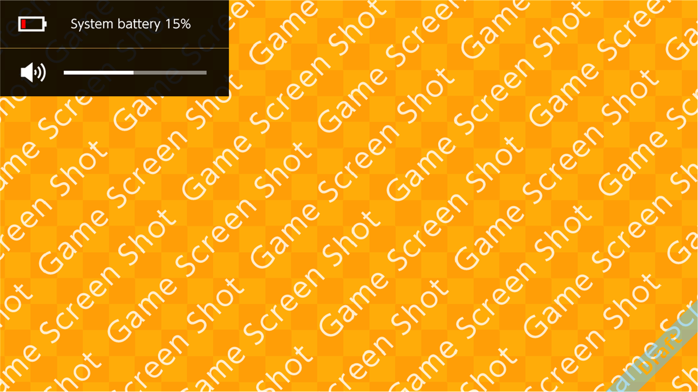

This feature displays urgent information on the screen when system power is on (including when applications are running).

Notifications appear in the upper left corner of the screen, floating above the application. The display size is 420 × 90 pixels. That size increases to 420 × 181pixels when displaying two notifications at the same time.
Features
Overlay notifications have the following characteristics.
- By default, all overlay notifications are set to display.
- Some overlay notifications, depending on their type, can be hidden using the system settings.
- There are two types of overlay notifications: conditions and reactions.
- Conditions are conveyed when the user needs to take an action to continue play on the NX.
- Reactions are conveyed to share information about the results of user actions.
- A maximum of two overlay notifications can be displayed simultaneously.
- Display switching varies with the type of overlay notification.
- For one condition and one reaction:
They both appear in their respective prescribed places. - For two conditions:
The condition with the higher pre-set priority appears first. - For two reactions:
Later reactions appear first.
- The display time varies with the type of overlay notification.
- There is no way to control this from within the application.
- Sound effects are enabled by default. They can be switched to disabled and back again from the system settings in Notifications and News.
- No vibration is used.
Overlay Notifications
The types of overlay notifications are as follows.
Table 5-1 Condition Overlay Notifications
| Icon |
Description |
Display Timing |
| TBD |
System battery level is low. |
- Appears when the system battery level is low.
- When the battery level is at or below 15% when either waking from sleep mode or turning power on.
|
| TBD |
Controller registered. |
- When a controller is registered to the system.
|
| TBD |
Controller battery level is low. |
- Appears when the controller battery level is low.
- When the battery level is low when either waking from sleep mode or turning power on.
- Fifteen minutes from the first appearance, or until recharging begins.
|
| TBD |
Controller battery depleted. |
- Controller connection broken because there is no more battery power.
- When the JOY-CON is connected via wireless communications while Bluetooth is disabled
- When switching from handheld mode to TV mode, but only when the JOY-CON are attached
|
| TBD |
Screenshot capture error (insufficient space). |
- When a capture error for a screenshot occurs.
|
| TBD |
Screenshot capture error (access error). |
- When a capture error for a screenshot occurs.
|
| TBD |
Play timer level is low. |
- When the play timer level is low.
- Thirty minutes left.
- Five minutes left.
- Ten seconds left.
- No play time left.
The play timer is one of the features offered with the provisionally named NX Monitoring smart device application.
The play timer is a developer term that refers to the amount of time left until the time restriction is reached in either "play time per day" or "end time," whichever comes first.
|
| TBD |
Set play time exceeded. |
- When beyond the set play time.
- Fifteen minutes over.
- Thirty minutes over.
- One hour over.
- Ninety minutes over.
- Two hours over.
|
| TBD |
Play time settings changed. |
- When the play timer settings were changed.
|
| TBD |
Monitoring services settings changed off-device. |
- When settings were changed using the provisionally named NX Monitoring smart device application.
|
| TBD |
Download complete for applications or downloadable content. |
- When an application or downloadable content has finished downloading.
- Merge when data within the same application is simultaneously downloaded.
|
| TBD |
X friend requests have arrived.
When X friends are online.
|
- When a user account is selected.
- In some situations, an account is selected in the account management applet, and you are waiting on the application's proprietary selection process.
|
| TBD |
Server maintenance warnings have arrived during gameplay. |
- When in receipt of a server maintenance warning for the game that is currently running.
|
| TBD |
Server maintenance has begun during gameplay. |
- When in receipt of server maintenance commencement notifications for the game that is currently running.
|
Table 5-2 Reaction Overlay Notifications
| Icon |
Description |
Display Timing |
| TBD |
System now charging. |
- When the AC adapter is connected and system recharging begins.
|
| TBD |
System charging interrupted. |
- When the AC adapter is unplugged during system recharging.
|
| TBD |
System charging error. |
- When the AC adapter is connected but the system does not start charging.
|
| TBD |
HOME Button locked |
- When the HOME Button is pressed while in a locked state.
|
| TBD |
Volume adjustment, for either speakers or headphones.
|
- When either of the volume buttons is pressed.
- When muted, including when the headphones are removed when the Mute when headphones removed setting is enabled in the system settings.
|
| TBD |
Screenshot capture success. |
- When a screenshot is successfully captured.
|
| TBD |
Screenshot capture lock. |
- When the Capture Button is pressed while screenshot captures are locked.
|